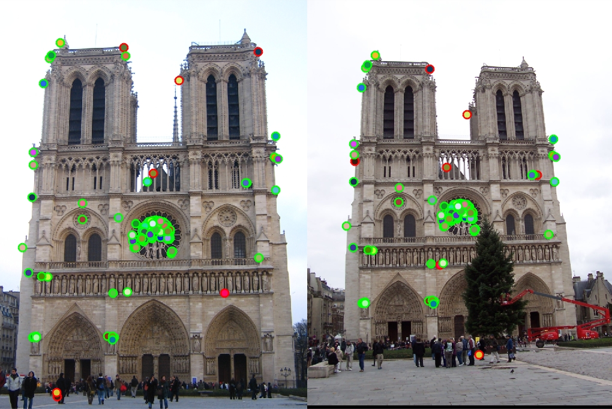
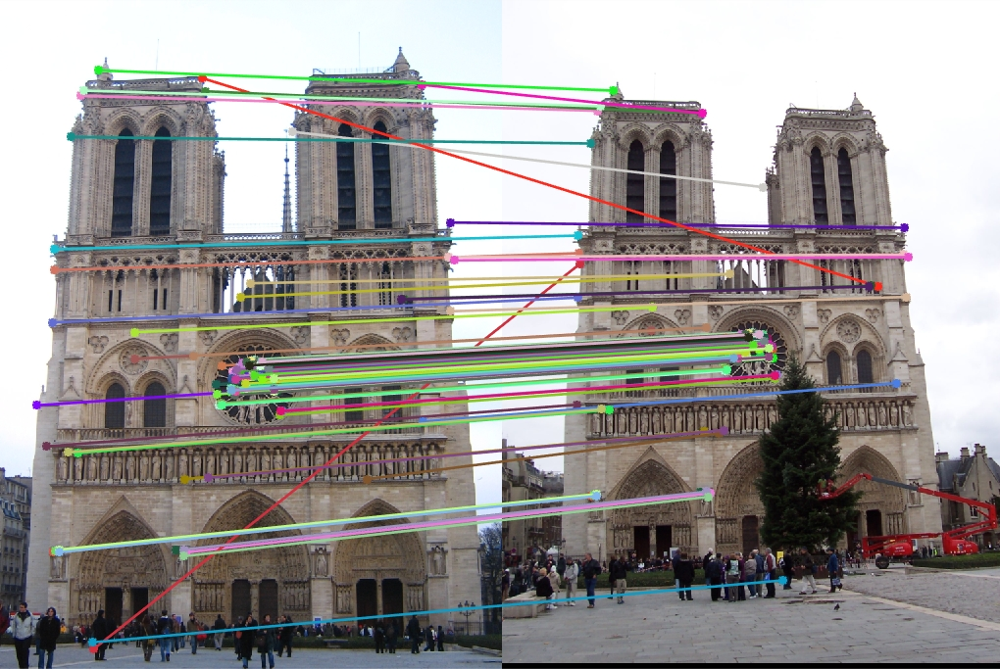
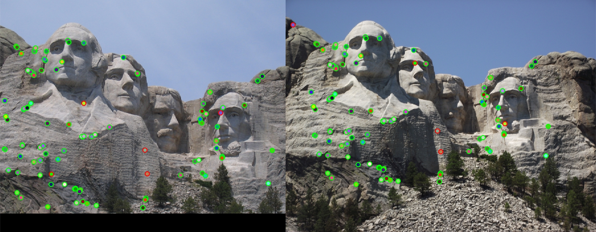
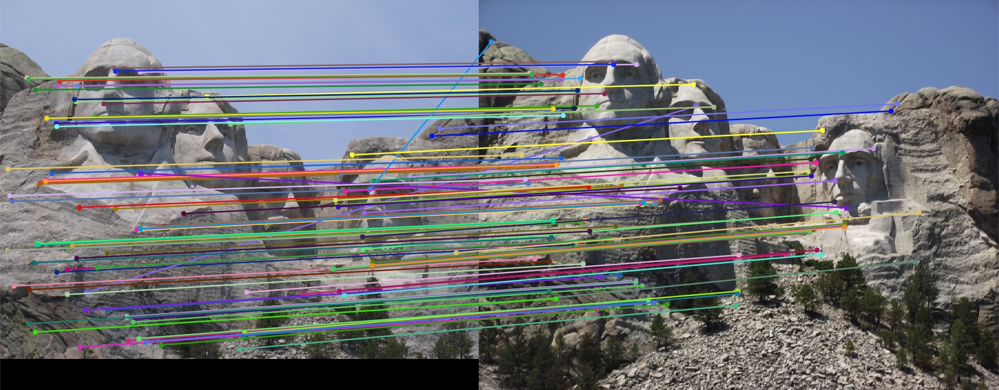
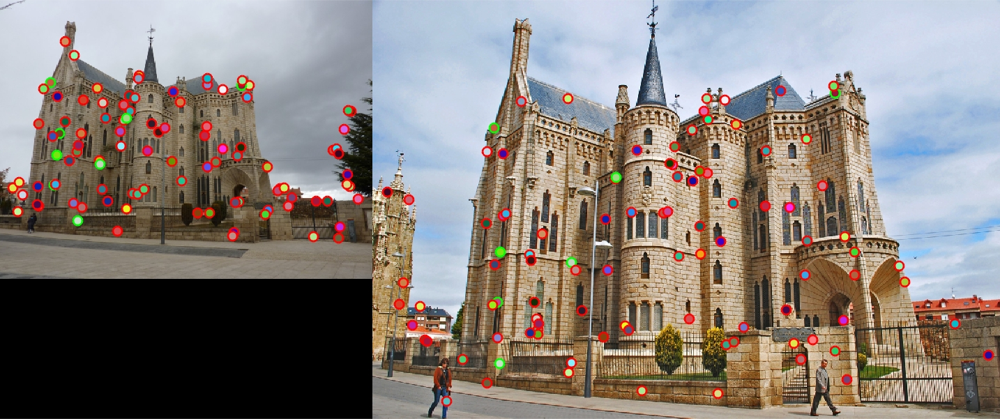
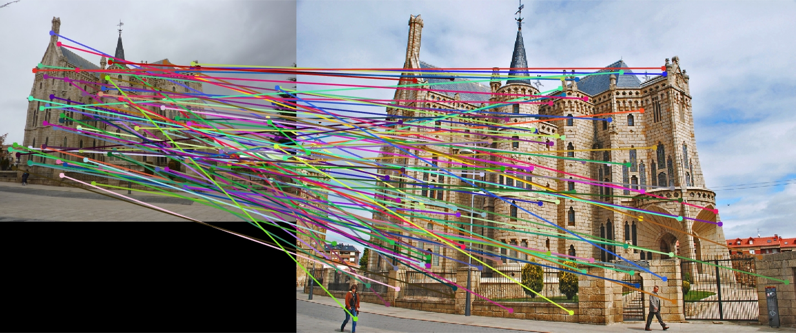

Featues matching is one important aspect of computer vision as it can be used to perform object detection, or it can be used in the process of creating panorama using several pictures. In this assignment it was required to implement 3 functions which each play a huge role in the reaiization of features matching. The functions were implemented in the suggested order.
The first attempt consisted of taking a patch of 16-by-16 pixels centered at the interest point, and these pixels were returned into a vector as the set of features describing the interest points, and evidently, this way of doing did not yield satisfying result as it was expected. Thus, the next step was to implement a SIFT-like feature descriptor.
The first step was to check whether the picture was a rgb image or a gray image. If it were to be a rgb image, it was converted into a gray image. Subsequently, the gradient magnitude and orientation of the image is computed. Given that the features discribing an interest point were supposed to come from a patch of dimension features_width-by-features_width devided into features_width/4 cells of 4-by-4 pixels, the next step was to figure out a way of indexing the patch in order to create a histogram of oriented gradient on each 4-by-4 cell. There are built-in MATLAB functions that can process block by block of data, but most of them return structures of the same dimensions as the input block, and since the implemented HOG is a 1-by-8 matrix, the process had to be written manually. The indices used to get the patch to be processed was obtained as:
for index=1:length(x)
x_idx = x(index);
y_idx = y(index);
w_x_start = x_idx - (feature_width/2) + 1;
w_x_end = x_idx + feature_width/2;
w_y_start = y_idx - (feature_width/2) + 1;
w_y_end = y_idx + feature_width;
...
Once the window was indexed out of the original image, it was convolved with a gaussiam filter of scale 1.5 to weight the importance of the gradient magnitude as the ones toward the center should weight more than the one toward the edges of the window, after the gaussian filtering the histogram of oriented gradient was computed. The 8 bins were in the range between -180, -135, -90, -45, 0, 45, 90, 135, and 180 degrees. any time a certain gradient orientation was on the border of two bins, it contribuated equally to each bin with half of its weight
Finding matching features was the simplest function to write. It only required to compute the euclidean distance between features comming from the two images being compared. In the attempt to speed up the computation, the operation was vectorized by creating a matrix made out of the same feature vector on all its rows, and the distance between that feature and all the features of the other image are computed at the same time. The the best and second best distance are selected before performing the test ratio to determine whether or not the feature is to be kept. The features are kept if the ratio of the distance between the best and second best is less that 0.75, meaning that the distance of the second best to the feature being tested is about 1.3 larger than that of the best match
This function took the longest time to implement. The scales of the gaussian gradient had to be tuned, and the value of the threshold as well. First the image was blured using a gaussian of scale 1, and secondly, all, the gadients of the image in the x and y direction were computed using a differential windows of dimensions 3-by-3, the squre of the gradients were computed and smoothed before forming the harris matrix. Having done all that, each pixel is assigned the value of the maximum pixel in its neighborhood (4-by-4 patch), and the index of any such value which is greater that 0.027 times the max value of all the matrix are returned as the indices of the interest points.
Whith the implementation discussed above, the Notre Dame pair of images gave a very good result with a 93% success match on 100 points. Results are shown on the pictures below.
|  |
|  |
The implementation discussed above gave even better results than that of Notre Dame when it came to the Mount Rushmore. The success rate was about 95% on 100 points
|  |
|  |
Although the implemented method worked well on the 2 first images, it worked very poorly on the Episcopal Gaudi image. It gave a success rate of 8%. This is due to the fact that the Harris detector does not handle scaling of images, and in this case the size of the two images a very different. The results are shown below
|  |
|  |